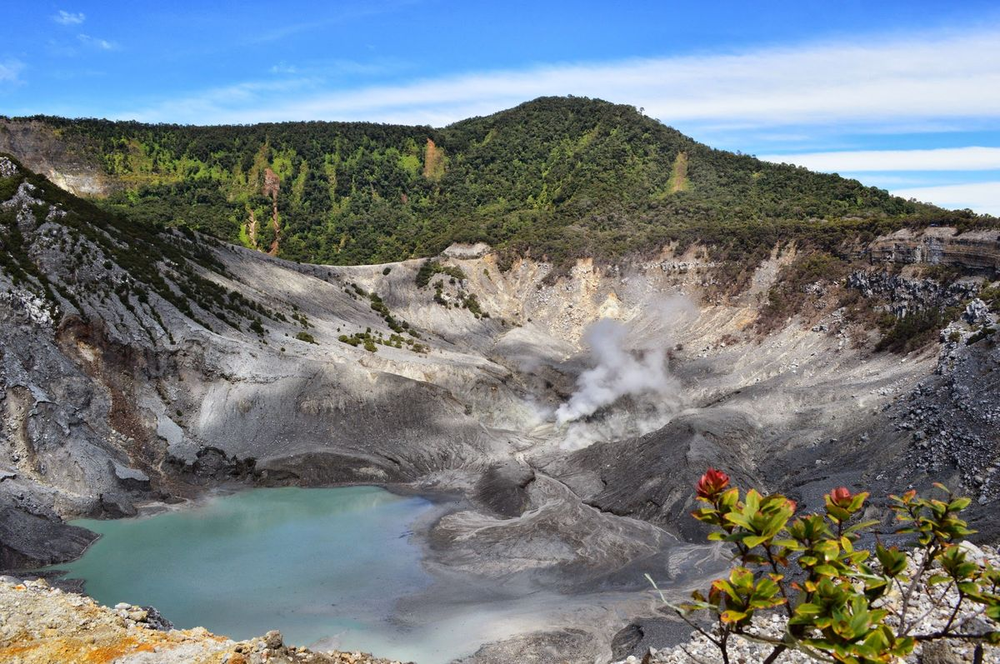
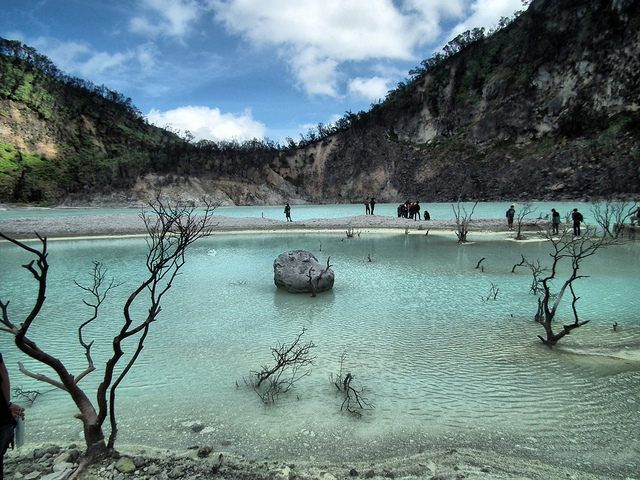
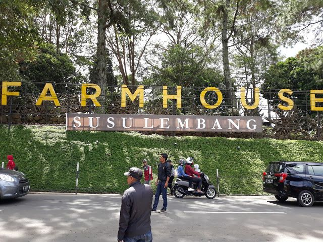
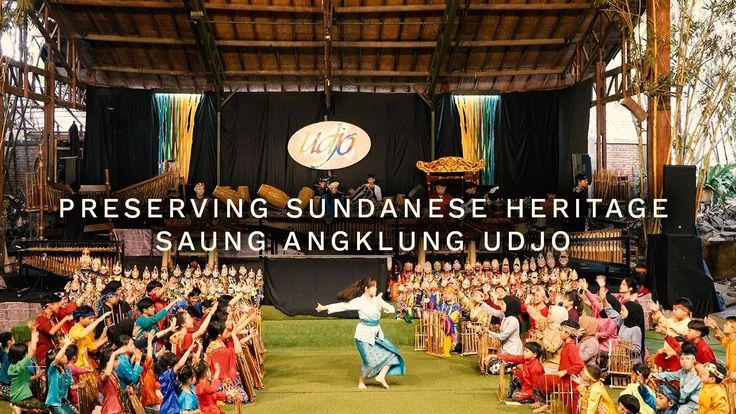
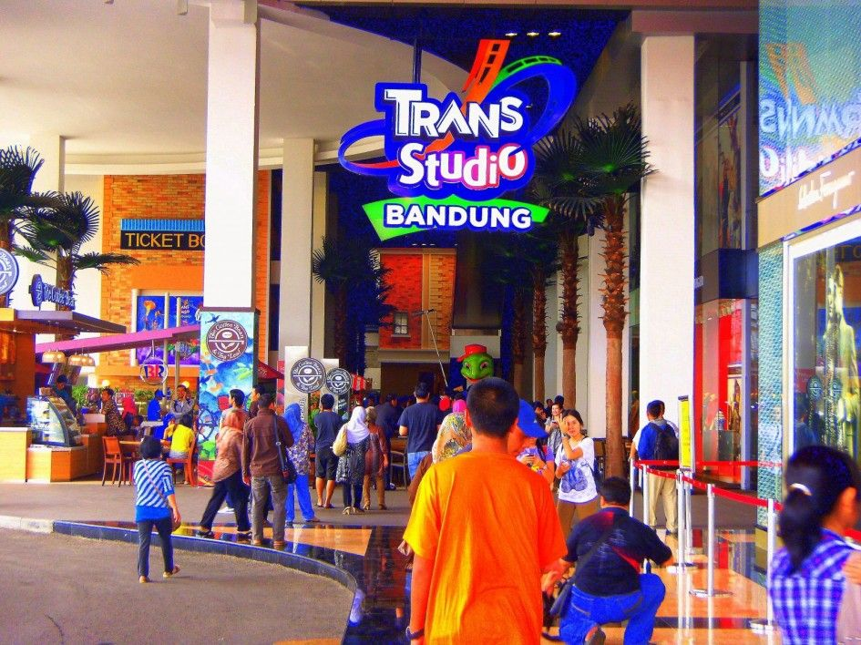
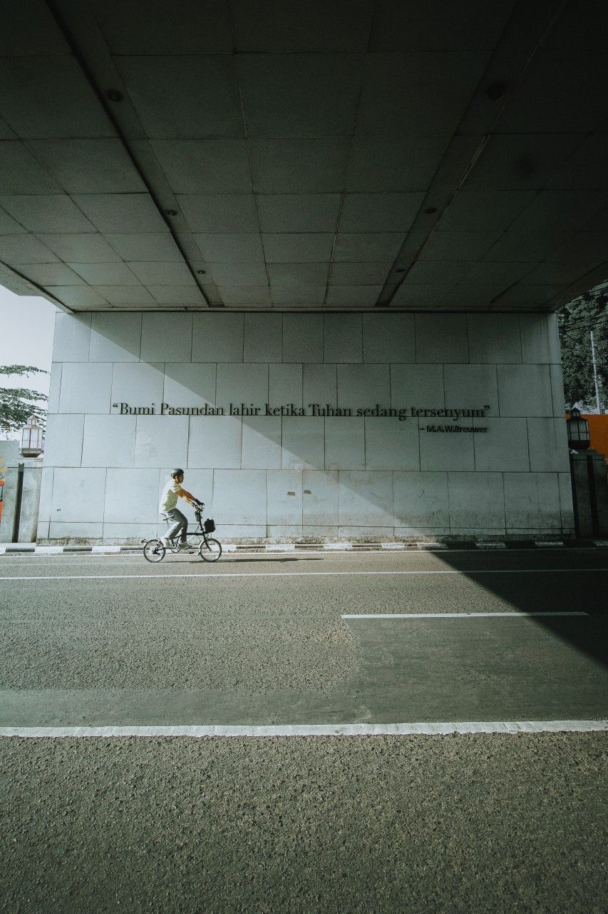
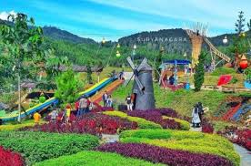

Selamat Datang di Explore Bandung
Bandung, ibu kota Provinsi Jawa Barat, adalah salah satu destinasi wisata terpopuler di Indonesia yang dikenal dengan julukan "Paris van Java" atau "Kota Kembang". Terletak di dataran tinggi dengan ketinggian sekitar 768 meter di atas permukaan laut, Bandung menawarkan udara sejuk sepanjang tahun, suhu rata-rata 23-25°C, yang membuatnya ideal untuk melarikan diri dari panas kota besar seperti Jakarta. Kota ini memiliki sejarah panjang sebagai pusat pemerintahan kolonial Belanda pada abad ke-19, yang tercermin dalam arsitektur bangunan-bangunan tua yang masih berdiri megah hingga kini. Selain itu, Bandung juga merupakan pusat mode, kuliner, dan pendidikan, dengan universitas-universitas ternama seperti ITB (Institut Teknologi Bandung) yang menambah getaran intelektual dan kreatif. Keindahan Bandung tidak hanya terletak pada pesona kota modernnya, tetapi juga pada ragam tempat wisata yang memadukan alam, budaya, sejarah, dan hiburan. Mulai dari petualangan alam di gunung-gunung vulkanik hingga relaksasi di taman-taman indah, Bandung memiliki sesuatu untuk semua jenis wisatawan. Selain itu, Bandung juga memiliki tempat wisata lain seperti Dago Dream Park untuk pemandangan kota dari atas, atau Situ Patenggang untuk danau buatan yang indah. Kuliner Bandung tak kalah menarik, dengan makanan seperti nasi timbel, karedok, dan brownies yang legendaris. Bandung siap memberikan pengalaman yang tak terlupakan. Mari menjelajahi "Kota Kembang" ini dan membuat kenangan indah bersama keluarga atau teman-teman. Jika Anda membutuhkan panduan/informasi lebih lanjut, jangan ragu untuk menghubungi kami.

Tempat Wisata di Bandung
Gunung Tangkuban Perahu

Lokasi: Lembang, Bandung.
Deskripsi: Gunung berapi aktif dengan kawah yang spektakuler. Aktivitas: Pendakian, trekking, melihat fumarol.
Harga Tiket: Rp 30.000 - Rp 50.000 per orang.
Waktu Operasional: 07:00 - 17:00.
Tips: Bawa jaket karena cuaca dingin, dan jangan lupa masker untuk menghindari sulfur.
Kawah Putih

Lokasi: Ciwidey, Bandung.
Deskripsi: Danau vulkanik dengan air berwarna putih kehijauan, dikelilingi hutan pinus. Aktivitas: Berjalan-jalan, berfoto.
Harga Tiket: Rp 15.000 - Rp 25.000 per orang.
Waktu Operasional: 07:00 - 17:00.
Tips: Kunjungi pagi hari untuk menghindari keramaian.
Jalan Braga

Lokasi: Pusat Kota Bandung.
Deskripsi: Jalan bersejarah dengan arsitektur kolonial, kafe, dan toko-toko. Aktivitas: Berjalan-jalan, belanja, kuliner.
Harga Tiket: Gratis.
Waktu Operasional: 24 jam, tapi toko buka 10:00 - 22:00.
Tips: Coba makanan khas seperti batagor dan siomay.
Gedung Sate
Lokasi: Jl. Diponegoro, Bandung.
Deskripsi: Monumen ikonik dengan arsitektur unik, simbol Bandung. Aktivitas: Kunjungi museum, taman.
Harga Tiket: Rp 5.000 per orang.
Waktu Operasional: 08:00 - 16:00.
Tips: Naik ke atas gedung untuk pemandangan kota.
Farm House Lembang
Lokasi: Lembang, Bandung.
Deskripsi: Taman bunga dan peternakan dengan wahana seperti kereta gantung. Aktivitas: Berjalan di taman, wahana keluarga.
Harga Tiket: Rp 25.000 - Rp 50.000 per orang.
Waktu Operasional: 09:00 - 17:00.
Tips: Cocok untuk keluarga, ada area bermain anak.
Saung Angklung Udjo

Lokasi: Jl. Padasuka, Bandung.
Deskripsi: Tempat pertunjukan angklung dan budaya Sunda. Aktivitas: Tonton pertunjukan, belajar angklung.
Harga Tiket: Rp 50.000 - Rp 100.000 per orang.
Waktu Operasional: 10:00 - 16:00.
Tips: Pesan tiket online untuk menghindari antrian.
Trans Studio Bandung

Lokasi: Jl. Gatot Subroto, Bandung.
Deskripsi: Taman hiburan indoor dengan wahana seru. Aktivitas: Roller coaster, teater 4D.
Harga Tiket: Rp 150.000 - Rp 250.000 per orang.
Waktu Operasional: 10:00 - 20:00.
Tips: Bawa anak-anak, ada area khusus untuk mereka.
Galeri Tempat Wisata Bandung


Kontak Kami
Hubungi kami untuk informasi lebih lanjut atau saran perjalanan.
Tentang Kami
Explore Bandung adalah situs web yang didedikasikan untuk mempromosikan keindahan dan wisata di Bandung, Jawa Barat. Kami menyediakan informasi lengkap tentang tempat wisata yang ada di kota Bandung. Bandung dikenal dengan julukan "Kota Kembang" karena bunga-bunganya yang indah dan cuaca sejuknya. Kunjungi kota Bandung untuk membuat kenangan tak terlupakan!